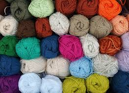

This is a bear that I made. In fact, it is the first stuffed animal
that I ever made. I improvised and had to stuff it with plastic bags.
| Home | About Me | Beginning Questions | Helpful Links |
|---|
 The Crochet Corner
So you want to learn how to crochet?
Welcome to the wonderful world of crocheting. It's not just for your grandma anymore!
Learning how to crochet may seem like a daunting task, but it is not as difficult as one
might think, I promise.
Before long, you will be unable to stop yourself from picking up a crochet hook and making
something new.
I will be your guide as you enter this new world.
Look at what you will be able to do one day! This is only a small fraction
of what one can do with crocheting.
This is a bear that I made. In fact, it is the first stuffed animal
that I ever made. I improvised and had to stuff it with plastic bags.
This is a wreath that I made for my mom for Mother's Day.
The yarn flowers leaves are set
onto a foam ring that I wrapped in burlap.
This is a toy unicorn. It turned out larger than I had expected it
to be,
but I am still quite proud of it. It, too, is stuffed with plastic bags.
This is a baby hat that I made for my friend and her newborn. This was a
quick and simple project, and I absolutely love how it turned out.